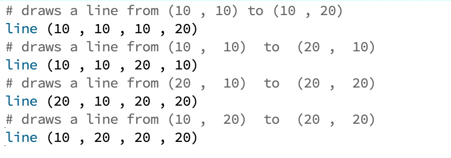
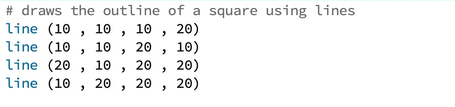

By this point, you might be wondering why we started including lines that begin with the # symbol in our code examples. In Python, the # denotes a comment. All of the text on any line that begins with the # symbol will be completely ignored by the computer when it tries to execute your code. The purpose of comments are to help humans understand the computer code when they are reading it. Because computer programs can get complicated very quickly, good commenting is essential to being a good programmer. Of course, since comments are a non-technical part of programming, rigorously defining a ‘good’ comment isn’t very easy. One way we can put it is that good comments should be at a higher level of abstraction than the code itself. Comments should try to explain the purpose or behaviour of whole blocks of code — you certainly don’t need a one-to-one ratio between lines of code and comments.
The following is an example of bad commenting:

The comments here are completely redundant to anyone who understands Python syntax and knows what the line() function does. Good comments should instead give an idea of why you are calling the line function, and how (if at all) the four function calls are related. The following is an example of much better commenting:
